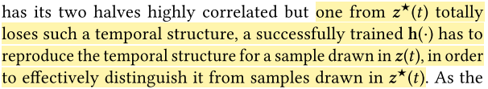

MoVi-Fi: Motion-robust Vital Signs Waveform Recovery via Deep Interpreted RF Sensing
术语
- IR-UWB
- FMCW
- RF Channel Impulse Responses (CIRs)
- a source separation algorithm : independent component analysis (ICA)
笔记
-
Inspiration
What inspires our design is that RF reflections caused by vital signs, albeit weak, do not totally disappear but are composited with other motion-incurred reflections in a nonlinear manner.
-
innovative method: deep contrastive learning
-
authors categorize body movements to three types, and use algorithms to exploit the distinct patterns of various movements types.
we propose two novel self-supervised contrastive-learning algorithms to exploit the distinct patterns of various movement types
-
an encoder-decoder module is trained to reproduce the fine-grained waveform of both heartbeat and breath
Finally, we design an encoder-decoder module trained by a discriminator, in order to reproduce the fine-grained waveform of both heartbeat and breath.
-
key idea to detect distance variation in Equ.(1)
The key idea to detect above distance variations with RF signals is to extract the amplitude and phase changes of CIR.
-
authors assume that there is no other objects block the subject. However, this problem widely happen in daily life.
Though there could be multiple reflection paths, radar-based RF-sensing considers only the direct path provided that no other objects block the subject
-
body movements may cause the rate of heartbeat increase such as strenuous exercise. This assumption is incorrect.
they may have different features, such as distinct frequencies, phases, and/or different level of randomness
-
key approach of separation
it essentially lever-ages the nonlinear mapping ability of a neural feature ex-tractor to reverse the nonlinear composition between body movements and vital signs.
问题
-
why reproduce the temporal structure for the sample drawn in $z(x)$? The temporal structure of bottom half of $z^{*}(x)$ is heavily corrupted.
its temporal structure is heavily corrupted in the bottom half (the lower-right part of the input in Figure 9)

总结
icexyz787@gmail.com
2021-08-18